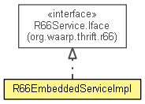

org.waarp.openr66.thrift
Class R66EmbeddedServiceImpl
java.lang.Object
 org.waarp.openr66.thrift.R66EmbeddedServiceImpl
org.waarp.openr66.thrift.R66EmbeddedServiceImpl
- All Implemented Interfaces:
- org.waarp.thrift.r66.R66Service.Iface
public class R66EmbeddedServiceImpl
- extends Object
- implements org.waarp.thrift.r66.R66Service.Iface

Embedded service attached with the Thrift service
- Author:
- Frederic Bregier
| Methods inherited from class java.lang.Object |
clone, equals, finalize, getClass, hashCode, notify, notifyAll, toString, wait, wait, wait |
R66EmbeddedServiceImpl
public R66EmbeddedServiceImpl()
transferRequestQuery
public org.waarp.thrift.r66.R66Result transferRequestQuery(org.waarp.thrift.r66.R66Request request)
throws org.apache.thrift.TException
- Specified by:
transferRequestQuery in interface org.waarp.thrift.r66.R66Service.Iface
- Throws:
org.apache.thrift.TException
infoTransferQuery
public org.waarp.thrift.r66.R66Result infoTransferQuery(org.waarp.thrift.r66.R66Request request)
throws org.apache.thrift.TException
- Specified by:
infoTransferQuery in interface org.waarp.thrift.r66.R66Service.Iface
- Throws:
org.apache.thrift.TException
isStillRunning
public boolean isStillRunning(String fromuid,
String touid,
long tid)
throws org.apache.thrift.TException
- Specified by:
isStillRunning in interface org.waarp.thrift.r66.R66Service.Iface
- Throws:
org.apache.thrift.TException
infoListQuery
public List<String> infoListQuery(org.waarp.thrift.r66.R66Request request)
throws org.apache.thrift.TException
- Specified by:
infoListQuery in interface org.waarp.thrift.r66.R66Service.Iface
- Throws:
org.apache.thrift.TException
Copyright © 2009-2013 Waarp. All Rights Reserved.